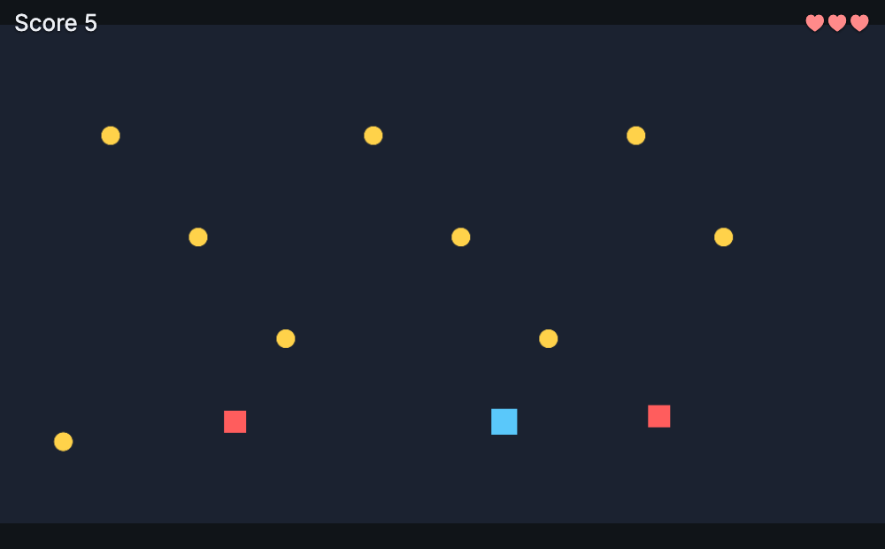
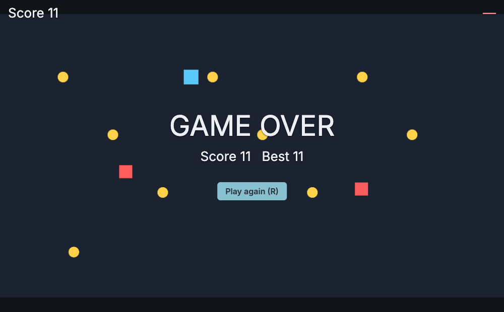

17 · Coin Dash: a whole small game
Coin Dash: collect coins, avoid red squares, three lives, a game-over screen with restart and a saved best score. About 100 lines of JavaScript, no art needed. The finished project is examples/coin-dash (open it from the hub's Examples, or nord serve examples/coin-dash).

The scene and the objects#
| Object | Components | Script |
|---|---|---|
| Camera | camera |
– |
Player (tag player) |
sprite, rigidbody (gravityScale 0), collider |
player.js |
| GameManager | – | game-manager.js |
| Hud | – | hud.js |
| Spawner | – | spawner.js |
Prefabs: prefabs/coin.prefab.json (sprite + trigger, tag coin, coin.js) and prefabs/enemy.prefab.json (sprite + rigidbody + collider, tag enemy, enemy.js).
nord.project.json: 960×540, physics arcade with gravity [0,0,0] (top-down), input actions left right up down restart.
Build it step by step#
nord new coin-dash -t 2d, copy two small PNGs (assets/sprites/square.png,circle.png) from any template.- Edit
nord.project.json: display 960×540,physics.gravity[0,0,0]. - Make the objects in the table (the editor: Hierarchy ▸ + Create), add components in the Inspector, make the two prefabs (right-click ▸ Create prefab), delete the prefab instances from the scene.
- Create the scripts below and attach them. Press Play.
game-manager.js: score, lives and state for free#
import { GameManager } from 'nord';
export default class CoinGameManager extends GameManager {}The built-in manager already has AddScore, LoseLife, state, Restart, SaveHighScore and emits score, lives, gameover. Inspector field: startLives (3).
player.js: movement, bounds, getting hurt#
import { MonoBehaviour, SerializeField, UnityInput as Input, GameManager } from 'nord';
export default class Player extends MonoBehaviour {
static attributes = SerializeField({ speed: 240 });
Awake() { this.hurtUntil = 0; }
FixedUpdate() {
const gm = GameManager.instance;
const alive = gm && gm.state === 'playing';
const x = alive ? Input.GetAxis('Horizontal') : 0;
const y = alive ? -Input.GetAxis('Vertical') : 0; // screens have y pointing down
this.physics.setVelocity(this.entity, x * this.speed, y * this.speed);
}
LateUpdate() { // stay inside the 960 x 540 arena
const p = this.entity.pos;
this.entity.pos = [Math.min(945, Math.max(15, p[0])), Math.min(525, Math.max(15, p[1])), p[2]];
}
OnCollisionEnter(other) {
if (!other.hasTag('enemy') || performance.now() < this.hurtUntil) return;
this.hurtUntil = performance.now() + 900; // short invulnerability
GameManager.instance.LoseLife();
this.Destroy(other);
}
}Unity parallels: [SerializeField] = SerializeField({...}); Rigidbody2D.velocity = physics.setVelocity; OnCollisionEnter2D(Collision2D) = OnCollisionEnter(other) (the other entity); CompareTag = hasTag.
coin.js: a trigger pick-up that vanishes#
import { MonoBehaviour, GameManager } from 'nord';
export default class Coin extends MonoBehaviour {
Start() { this.Invoke('Vanish', 8); } // Invoke("Vanish", 8f)
OnTriggerEnter(other) {
if (!other.hasTag('player')) return;
GameManager.instance.AddScore(1);
this.Destroy();
}
Vanish() { this.Destroy(); }
}enemy.js: chase the player#
import { MonoBehaviour, SerializeField } from 'nord';
export default class Enemy extends MonoBehaviour {
static attributes = SerializeField({ speed: 90 });
Start() { this.player = this.FindWithTag('player'); }
FixedUpdate() {
if (!this.player || this.player.destroyed) return;
const dx = this.player.pos[0] - this.entity.pos[0], dy = this.player.pos[1] - this.entity.pos[1];
const d = Math.hypot(dx, dy) || 1;
this.physics.setVelocity(this.entity, (dx / d) * this.speed, (dy / d) * this.speed);
}
}spawner.js: two coroutines#
import { MonoBehaviour, SerializeField, WaitForSeconds, GameManager } from 'nord';
export default class Spawner extends MonoBehaviour {
static attributes = SerializeField({ coinEvery: 1.2, enemyEvery: 5 });
Start() { this.StartCoroutine(this.SpawnCoins()); this.StartCoroutine(this.SpawnEnemies()); }
*SpawnCoins() {
while (true) {
yield new WaitForSeconds(this.coinEvery);
if (GameManager.instance.state !== 'playing') continue;
this.Instantiate('prefabs/coin.prefab.json', { pos: [this.game.rng.range(40, 920), this.game.rng.range(40, 500), 1] });
}
}
*SpawnEnemies() {
while (true) { // more score = enemies come faster, never faster than 1.5 s
yield new WaitForSeconds(Math.max(1.5, this.enemyEvery - GameManager.instance.score * 0.15));
if (GameManager.instance.state !== 'playing') continue;
const left = this.game.rng.chance(0.5);
this.Instantiate('prefabs/enemy.prefab.json', { pos: [left ? 20 : 940, this.game.rng.range(40, 500), 2] });
}
}
}this.game.rng is the game's seedable random generator (range, int, chance, pick, shuffle): use it instead of Math.random() when you want replays or tests.
hud.js: listens to the GameManager, shows game over#
import { MonoBehaviour, GameManager } from 'nord';
export default class Hud extends MonoBehaviour {
Start() {
const gm = GameManager.instance;
this.score = this.ui.label(`Score ${gm.score}`, { x: 16, y: 10, size: 26 });
this.lives = this.ui.label(this.Hearts(gm.lives), { anchor: 'tr', x: 16, y: 10, size: 26, color: '#ff8a8a' });
this.off = [
this.game.events.on('score', ({ score }) => this.score.set(`Score ${score}`)),
this.game.events.on('lives', ({ lives }) => this.lives.set(this.Hearts(lives))),
this.game.events.on('gameover', ({ score }) => this.ShowGameOver(score)),
];
}
Hearts(n) { return '♥'.repeat(Math.max(0, n)) || '—'; }
ShowGameOver(score) {
this.ui.label('GAME OVER', { screen: 'over', anchor: 'c', y: -60, size: 56 });
this.ui.label(`Score ${score} Best ${GameManager.instance.SaveHighScore()}`, { screen: 'over', anchor: 'c', y: 0, size: 26 });
this.ui.button('Play again (R)', () => GameManager.instance.Restart(), { screen: 'over', anchor: 'c', y: 70 });
this.ui.show('over');
}
Update() { if (GameManager.instance.state === 'gameover' && this.game.input.pressed('restart')) GameManager.instance.Restart(); }
OnDestroy() { this.off?.forEach((f) => f()); this.score?.remove(); this.lives?.remove(); this.ui.clear('over'); this.ui.hide('over'); }
}
What you learned (and where it is explained)#
| Idea | Where |
|---|---|
| attributes in the Inspector | 1 · First script |
| keyboard axes and physics velocity | 2 · Input and movement |
FindWithTag, hasTag |
3 · Finding objects |
| GameManager, events and a HUD | 4 · GameManager |
prefabs, Instantiate, Destroy |
5 · Spawning |
| triggers and collisions | 6 · Collisions |
coroutines, Invoke |
7 · Time |
| labels, buttons, screens | 8 · UI |
| best score | 10 · Saving |
Ideas to extend it#
- Power-up prefab (a trigger that sets
GameManager.instance.Set('shield', true)for 5 s). - Coins that fly into the score (tween the coin's
posto the corner, thenAddScore). - Sound: library
util-sfx.js+this.events.emit('sfx','coin')(Audio). - Waves: a
data/waves.jsonfile loaded withScriptableObject.Load(Data assets). - A start menu scene with the UI Designer.